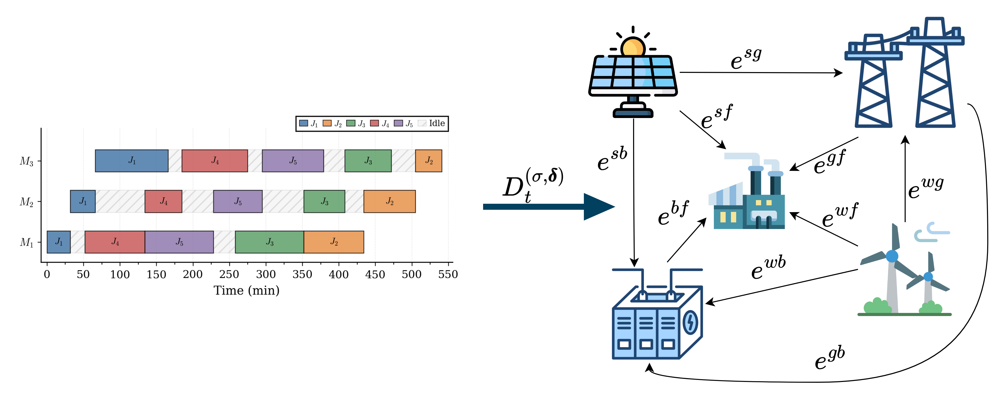
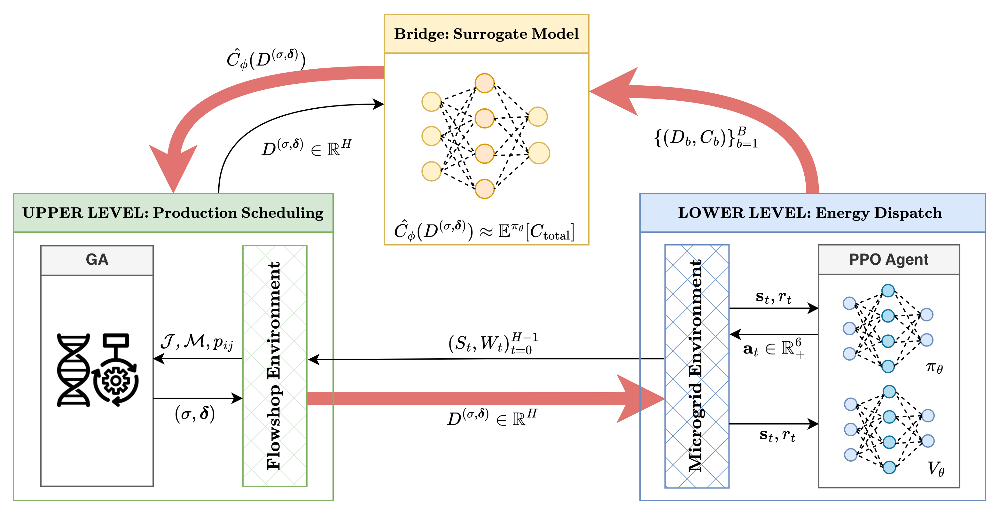

Back to Projects
Bilevel Optimization for Joint Flowshop Scheduling and Microgrid Energy Management


Key Contributions
- Designed a bilevel optimization framework coupling Genetic Algorithm (production scheduling) with PPO (energy dispatch), bridging two traditionally siloed optimization problems into a single co-optimization loop.
- Built a custom OpenAI Gym environment modeling real solar/wind/battery/grid energy flows with physical constraints — SOC limits, charging/discharging efficiency losses, and time-of-use pricing from 3 real-world locations.
- Invented a “factory-first” action space that eliminates suboptimal RL behaviors by construction — the agent was selling renewable energy for short-term gain then buying expensive grid power; the new design prevents this structurally.
- Engineered a 5-stage training pipeline: demand pool generation → multi-demand behavioral cloning → PPO pretraining → surrogate model initialization → bilevel co-optimization.
- Evaluated across 90 scenarios (3 locations × 6 problem sizes × 5 seeds) against 4 baselines (RBC, A-RBC, SAC, MPC); PPO-Bi achieves 8–30% cost reduction.
- Demonstrated >90% zero-shot performance retention across unseen locations and seasons without retraining.
Python
PyTorch
PPO
Genetic Algorithm
OpenAI Gym
NumPy
Pandas
Under Review — IISE Transactions